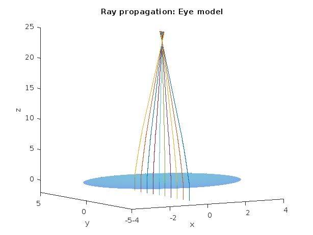
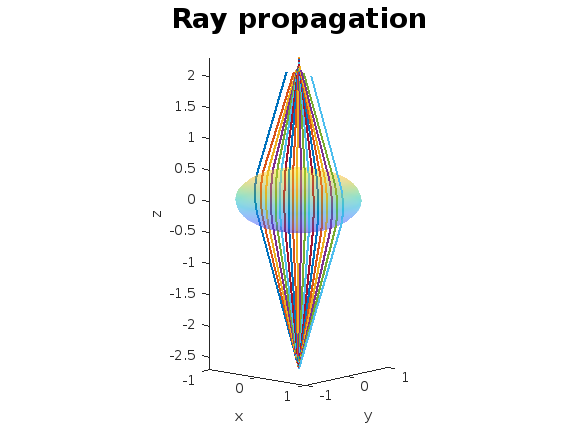
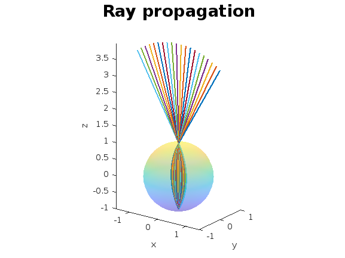

INVESTIGACION Y DESARROLLO DE PROPUESTAS DE MEJORA
Trazado tridimensional de rayos en el ojo humano mediante modelación matemática-computacional
El proyecto utiliza simulación numérica para explorar el trazado tridimencional de rayos en el ojo humano y de esta manera estudiar diversas aberraciones opticas. Todo esto medianta la implementacipon optica geométrica y modelacion del índice de refracción del ojo humano mediante una función poisson-Gauss.



Contacto
Pablo Antonio Fernández Pozas A01197215@tec.mx